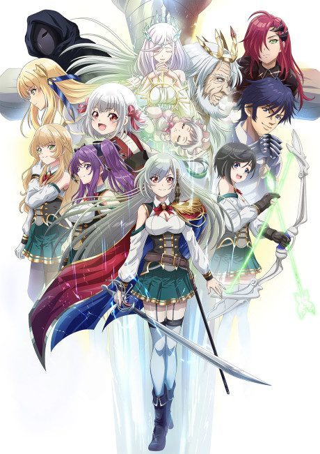

Didn't I Say to Make My Abilities Average in the Next Life?!
私、能力は平均値でって言ったよね！
Misato dies and asks to be reborn with average abilities, but a mix-up gives her powers far beyond anyone else's.
After the anime, read the light novel from Volume 4.
6.6AniList score
—Animeter, no votes yet
12episodes
Rate it or report where you stopped
Is it worth pushing through?
Built from what visitors report across all 12 episodes.
Loading reports…Checking what other people said about this one.
Sign in above with your email to add your report.
More like Didn't I Say to Make My Abilities Average in the Next Life?!
 Manga Vol. 57.0
Manga Vol. 57.0
 Manga Vol. 107.3
Manga Vol. 107.3
 Manga Vol. 57.3
Manga Vol. 57.3
Manga Vol. 36.9
The Executioner and Her Way of Life Manga Vol. 67.2
Manga Vol. 67.2
 Unclear7.2
Unclear7.2
 Manga Vol. 128.0
Manga Vol. 128.0
 Done7.6
Done7.6

Manga Vol. 46.5 Manga Ch. 248.5
Manga Ch. 248.5
 Manga Ch. 377.7
Manga Ch. 377.7
 Original8.3
Original8.3